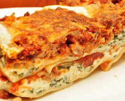

Worlds Best Lasagna Recipe!

Ingredients
- 2 Teaspoons extra virgin olive oil
- 1 ground pound beef chuck
- 1/2 medium onion, diced (3/4) cup
- 1/2 large bell pepper (green, red, or yellow), diced (about 3/4 cup)
- 2 cloves garlic, minced
- 1 28-ounce can of good-quality tomato sauce
- 3 ounces of tomato paste (half a 6-ounce can)
- 1 14 ounce can of crushed tomatoes
- 2 Tablespoons chopped fresh oregano, or 2 Teaspoons dried oregano
- 1/4 cup chopped fresh parsely (preferably flat leaf)
- 1 Tablespoon of Italian seasoning.
- 1 pinch of garlic powder and/or garlic salt
- 1 Tablespoon red or white wine vinegar
- 1 Tablespoon to 1/4 cup sugar (to taste, optional)
- Salt
To Assemble the Lasagna
- 1/2 pound of dry lasagna noodles (requires 9 unbroken sheets)
- 15 ounces ricotta cheese
- 1 1/2 pounds (24 ounces) mozarella cheese, grated or sliced
- 1/4 pound (4 ounces) freshly grated Parmesan cheese
Method
Put pasta on to boil:
Put a large pot of salted water (1 tablespoon of salt for every 2 quarts of water) on the stovetop on high heat.
It can take a while for a large pot of water to come to a boil (this will be your pasta water), so prepare the
sauce in the next steps while the water is heating.Brown the ground beef:
In a large skillet, heat 2 teaspoons of olive oil on medium-high heat.
Add the ground beef and cook until it is lightly browned on all sides.
Remove the beef with a slotted spoon to a bowl. Drain off all but a tablespoon of fat.Cook the bell pepper, onions, and garlic; add back the beef:
Add the diced bell pepper and onions to the skillet.
Cook for 4 to 5 minutes, until the onions are translucent and the peppers softened.
Add the minced garlic and cook half a minute more.
Return the browned ground beef to the pan.
Stir to combine, reduce the heat to low, and cook for another 5 minutes.Make the sauce:
Transfer the beef mixture to a medium-sized (3- to 4-quart) pot.
Add the crushed tomatoes, tomato sauce, and tomato paste to the pot.
Add the parsley, oregano, and Italian seasonings, adjusting the amounts to taste.
Sprinkle with garlic powder and/or garlic salt, to taste.
Sprinkle with red or white wine vinegar.
Stir in sugar, a tablespoon at a time, tasting after each addition.
(The amount of sugar needed will vary, depending on how acidic your tomatoes are.)
Add salt to taste. Remember that you will later be adding parmesan, which is salty.
Bring the sauce to a simmer and then lower the heat to maintain a low simmer.
Cook for 15 to 45 minutes, stirring often.
Scrape the bottom of the pot occasionally, making sure nothing sticks to the bottom and scorches.
Remove from heat.Boil and drain the lasagna noodles:
By now, the salted water you started heating in step one should be boiling.
Add the dry lasagna noodles and cook them to al dente, per package directions.
(Note: noodles may be cooked in advance.)
Stir the water often to prevent sticking.
Make sure that the water remains at a full rolling boil during the entire cooking process,
in order to prevent noodles from sticking.
When the noodles are done, drain them in a colander and rinse with cool water,
gently separating any noodles that may be sticking together.
Spread a little olive oil on a large, rimmed baking sheet,
and lay out the cooked noodles on this sheet,
turning them once so that all sides get coated with some of the olive oil.
This will prevent them from sticking together.Preheat the oven to 375°F.
Assemble the lasagna:
In a 9x13-inch casserole or lasagna dish, ladle a cup of sauce over the bottom of the dish and spread it evenly.
Arrange one layer of lasagna noodles lengthwise over the sauce (about 3 long noodles;
the edges may overlap, depending on your pan). Ladle a third of the remaining sauce over the noodles.
Sprinkle a third of the grated mozzarella on top of the lasagna sauce.
Add half of the ricotta cheese by placing cheese dollops every two inches.
Sprinkle half of the grated parmesan cheese evenly over the top of the ricotta cheese.
Apply the second layer of noodles. Top it with half of the remaining sauce.
Add half of the remaining mozzarella, the rest of the ricotta cheese, and the rest of the parmesan cheese.
Finish with a final layer of noodles.
Spread the remaining sauce over the top layer of noodles and sprinkle with the remaining mozzarella cheese.Bake:
Cover the lasagna pan with aluminum foil, tenting the foil slightly so it doesn't touch the noodles or sauce.
Bake at 375°F for 45 minutes.
If you'd like more of a crusty top or edges, uncover the lasagna in the last 10 minutes.Cool and Serve:
Allow the lasagna to cool for at least 15 minutes before serving.
Leftovers will keep for about 5 days.
You can reheat lasagna in a conventional oven or microwave.
While storing, leave the aluminum tent on. (Try to keep the aluminum foil from touching the sauce.)
Link to the original recipe page